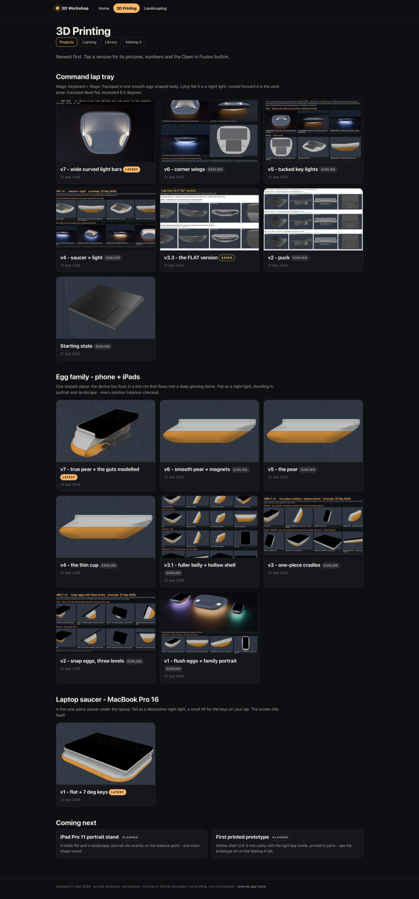
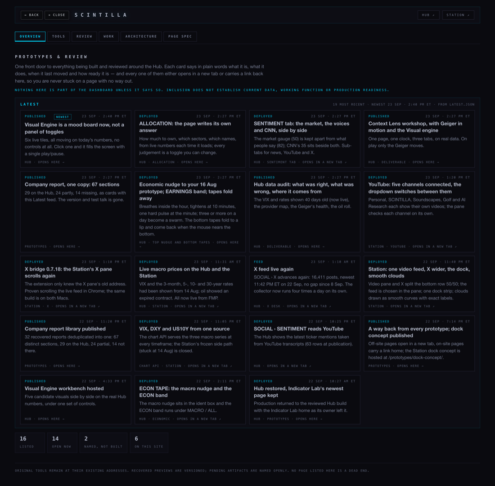
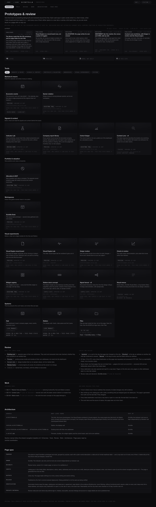
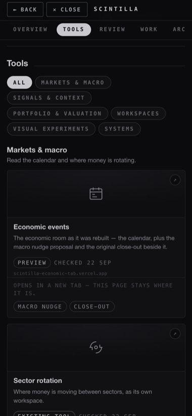
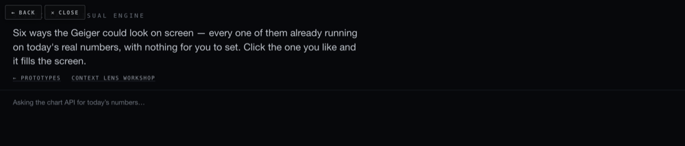
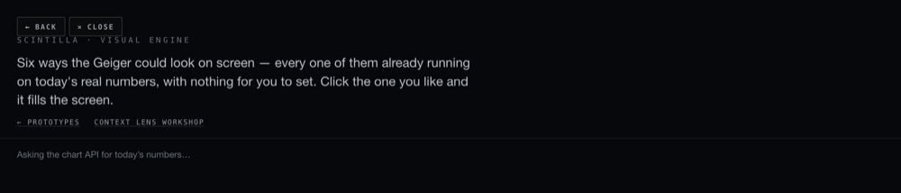

The Hub stops being a maze
You said: "I open these things of the logo menu button and I don't have a back button. I don't have a close button. I'm stuck", and that the prototypes page "looks horrible". Two things were done. Every page the Hub can open now carries its way out in its own header, instead of a grey pair floating on top of the page's own title. And the prototypes library was rebuilt on the model you pointed at — your 3D Workshop.
1. What I took from the 3D Workshop
I opened aharvey.app/3d-workshop in a real browser and read it as a visitor. What makes it easy to find your way there is not decoration — it is six plain habits:
- A bar that never leaves. The name on the left takes you home; the rooms sit beside it; the room you are in is a filled pill. You always know where you are and you can always leave.
- A second row inside a room (Projects · Lighting · Library · Making it), so a room can hold a lot without burying it.
- One line of plain instruction under the title: "Newest first. Tap a version for its pictures, numbers and the Open in Fusion button." It tells you the order and what to do.
- Everything grouped under a heading with a sentence, then a row of cards. You scan headings, not a list.
- Cards that all look the same shape: a picture on top, then the name, a small word for its state (LATEST · EARLIER · SAVED · PLANNED) and a date. You can tell which one is current without reading.
- A footer that says what this is and where the files are, and one link out.

One thing to tell you about your own site: the Workshop's Home tab is broken today — it shows "Could not load the workshop data". The 3D Printing and Landscaping rooms are fine. The cause is small: the home screen expects "what's next" to be a list of items, and in the data file it is a single line of text. I did not touch it — it is a different site and not this job — but that is the fix when you want it.
2. The library, before and after
Same information, same two files behind it (catalog.json and latest.json), same generator, same rules. What changed is how it reads:
- Nothing is hidden any more. The six tabs used to hide the other five sections, so whatever was not in the open tab could not be found. They now move you down one page that always holds everything.
- The tools come first and look like tools. Every card carries a plate with the tool's own mark, its name, a sentence, how ready it is, a date, and the address it lives at.
- Latest is one row you push sideways, not a wall of nineteen cards you must scroll past to reach the tools.
- It is grey. The blue is gone; every colour on the page is a grey, and no label is under 11 px.
- It fits a phone: one card per row, the tabs scroll sideways, and the BACK / CLOSE pair stays reachable.



3. The pair no longer covers the page
The grey BACK / CLOSE pair was added last week. On pages that had nowhere to put it, it floated in the top-left corner — straight over the page's own title. This is /visual-engine/ before and after: the title reads "SCINTILLA · VISUAL ENGINE", and before, the buttons sat on the first half of it.


Before today, 2 of 21 pages had a place of their own for the pair. Now 20 of 21 do. The one that does not is the Indicator Lab home, which is yours and is left exactly as it is — it carries its own link back to the library.
4. Every exit, checked in a window with no toolbar
I opened each page in a browser window with no address bar and no back arrow — the way the Hub runs on the iMac — and used only what is on the page: pressed CLOSE, then opened the page again and pressed BACK, then came to the page from the library and pressed BACK again.
| Page | Pair before | Pair now | CLOSE goes to | BACK, opened cold | BACK, arrived from the library |
|---|---|---|---|---|---|
| /lab.html | sat over the page | in its own place | the Hub | the Hub | — |
| /visual-engine/ | sat over the page | in its own place | the Hub | the Hub | — |
| /xfeed/ | sat over the page | in its own place | the Hub | the Hub | — |
| /fundamentals/ | sat over the page | in its own place | the Hub | the Hub | — |
| /fundamentals/spec/ | sat over the page | in its own place | the Hub | the Hub | — |
| /allocation/ | in its own place | in its own place | the Hub | the Hub | — |
| /prototypes/ | in its own place | in its own place | the Hub | the Hub | — |
| /prototypes/report-library/ | sat over the page | in its own place | the Hub | the library | back to the library |
| /prototypes/dock-concept/ | sat over the page | in its own place | the Hub | the library | back to the library |
| /prototypes/previews/signal-fanout-v2.html | sat over the page | in its own place | the Hub | the library | back to the library |
| /prototypes/indicator-lab/ | no pair at all | no pair (the owner's page) | — | — | carries its own link back to the library; left byte-identical |
| /deliverables/20260923/context-lens/CONTEXT-LENS.html | sat over the page | in its own place | the Hub | the library | — |
| /deliverables/20260923/data-audit/DATA-AUDIT.html | sat over the page | in its own place | the Hub | the library | — |
| /deliverables/20260923/earnings-tape/EARNINGS-TAPE.html | sat over the page | in its own place | the Hub | the library | — |
| /deliverables/20260923/econ-nudge/ECON-NUDGE.html | sat over the page | in its own place | the Hub | the library | — |
| /deliverables/20260923/events-earnings/EVENTS-EARNINGS.html | sat over the page | in its own place | the Hub | the library | — |
| /deliverables/20260923/how-unusual/HOW-UNUSUAL.html | sat over the page | in its own place | the Hub | the library | — |
| /deliverables/20260923/integrate/INTEGRATE.html | sat over the page | in its own place | the Hub | the library | — |
| /deliverables/20260923/report-library-2/REPORT-LIBRARY.html | sat over the page | in its own place | the Hub | the library | — |
| /deliverables/20260923/sentiment/SENTIMENT.html | sat over the page | in its own place | the Hub | the library | — |
| /deliverables/20260923/visual-moodboard/MOODBOARD.html | sat over the page | in its own place | the Hub | the library | — |
21 pages · 20 with the pair in its own place, clear of the title · no dead ends on the Hub
5. The Station: 33 of its 36 pages have no way back
I opened the Station pages the Hub can send you to, and then read every page in the Station's own production branch. The picture is worse than one page:
- 33 of 36 Station pages carry no link back at all. Only /tvwall/ and /components/ have one, plus the YouTube page below. In a window with no toolbar, each of the other 33 is a room with no door — including /deck/, the main screen.
- station.scintillahub.ai answers, and its one visible link is labelled "hub", but it goes to /registry, which is another Station page. Nothing on it points at the Hub.
- station.scintillahub.ai/youtube-connect/ — the page you named — did have a way back, but it was a 9 px line of text at the very bottom, under the whole channel list, reading "Back to the Station". My first automatic check reported this page as having no way out at all; that was my checker missing a link whose words were in the sentence rather than in the link. Corrected here.
What I changed: that one page now carries two plain links above its title — ← STATION (the deck) and ✕ HUB (scintillahub.ai). It is a control page you read and press, not one of the wall screens, so buttons belong on it. It sits on its own branch, station/nav-20260923, commit 4470120, and nothing is deployed.
What I did not change: the other 32 pages without an exit. They are display screens for the wall, and putting buttons on a wall screen is a decision for you, not a repair I should make unasked.
What could be wrong
- The pictures on the cards are the tool's own drawn mark, not a screenshot of the tool. They make the page readable at a glance; they do not prove anything about the tool behind them.
- Reachability is not function. Every card still says when it was last checked, and the page still refuses to call anything a "working tool" without proof.
- The exits were checked against a copy of the site running on this Mac, not against scintillahub.ai. The files are the ones that would be deployed, but nothing here has been deployed.
- On a phone the two header links (Hub ↗ / Station ↗) are hidden so the BACK / CLOSE pair and the name fit. Both still have their own cards further down the page.
What I did not do
- Nothing was pushed and nothing was deployed.
- The Indicator Lab home is untouched, byte for byte.
- The dashboard room, the sentiment work and the allocation contents belong to other lanes and were not touched.
- The Station dead end is reported, not fixed.
- The 3D Workshop's broken Home tab is reported, not fixed.